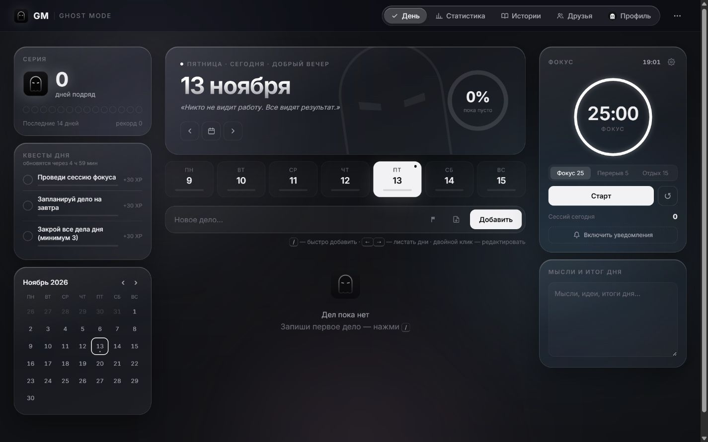
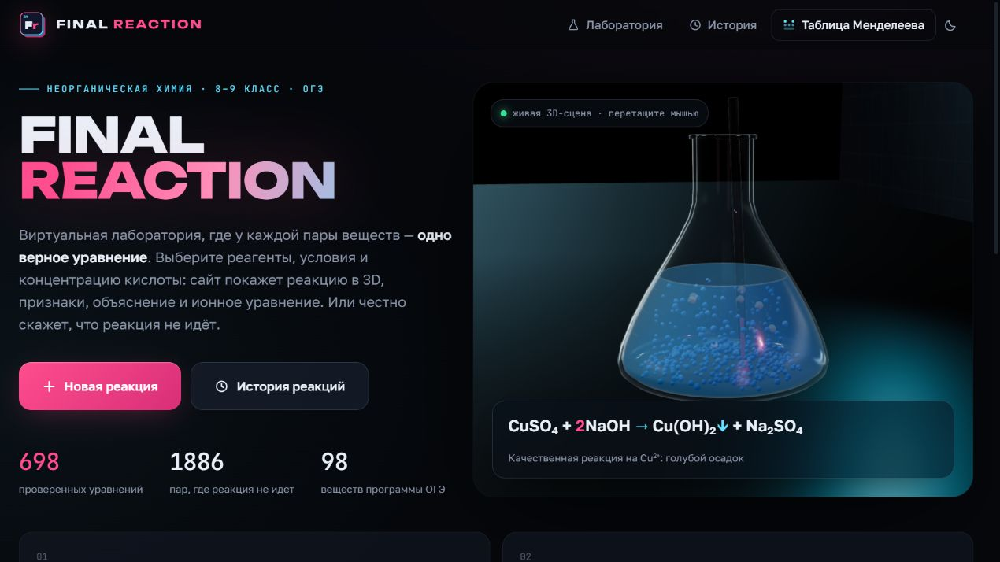
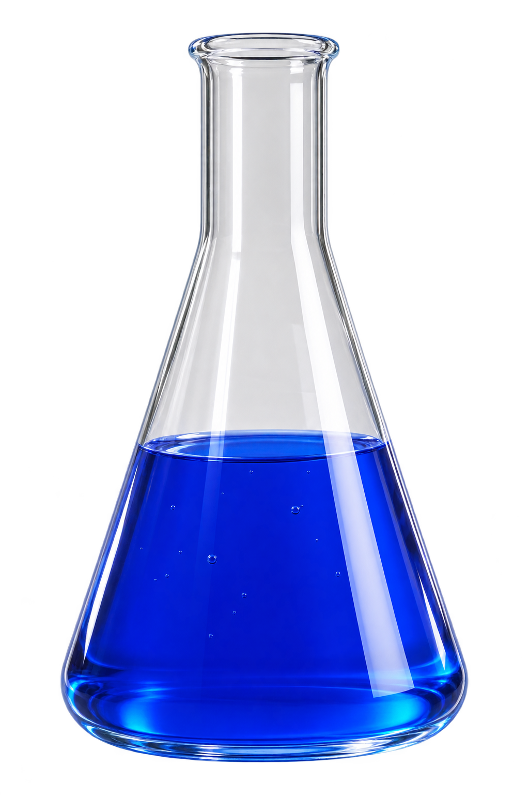

Планируй дела.
Следи за привычками.
Дела, привычки и таймер фокуса в одном пространстве. Серии дней, квесты и достижения помогают видеть движение вперёд.
Попробовать Ghost Modeinspired by the fear of being average.

Дела, привычки
и фокус.


Виртуальная
лаборатория.
Дела, привычки и таймер фокуса в одном пространстве. Серии дней, квесты и достижения помогают видеть движение вперёд.
Попробовать Ghost ModeВыбирай вещества и условия, наблюдай реакцию в 3D и разбирайся, что произошло. Виртуальная лаборатория для изучения неорганической химии.
Войти в лабораториюVeraxis — проект по созданию цифровых продуктов. Первые приложения — Ghost Mode для повседневных задач и Final Reaction для изучения химии.
Дизайн и разработка проектов — Владислав Ушкин.
Обсудим продукты, технологии
и развитие проектов.